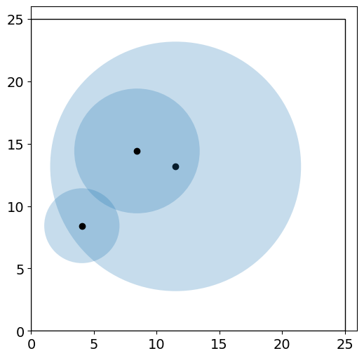
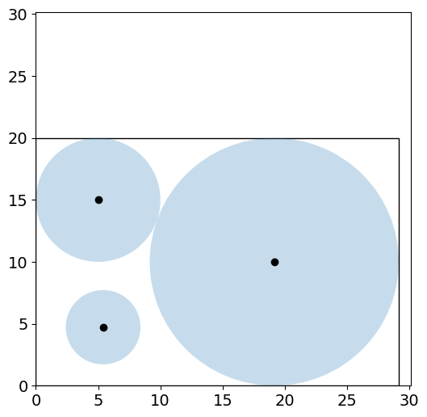
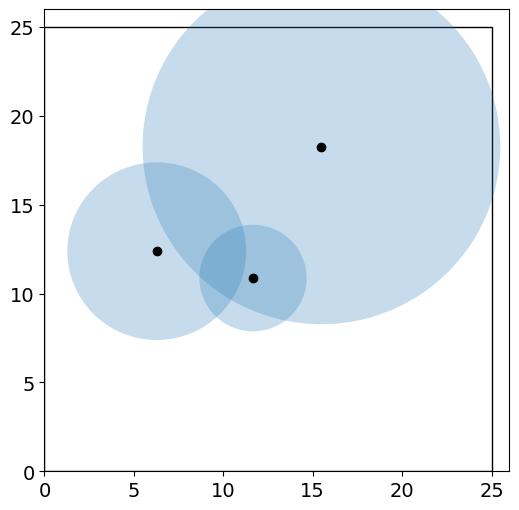
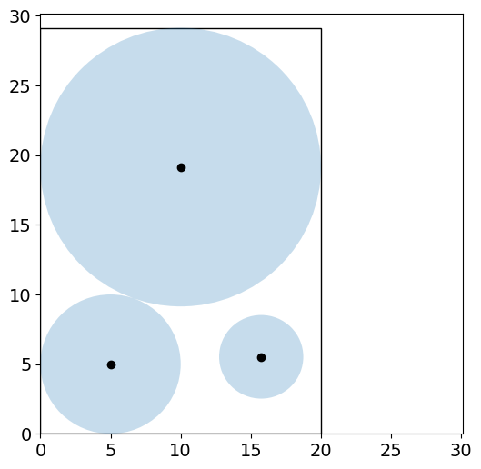

<!DOCTYPE html>


<html lang="en" data-content_root="../../" >

  <head>
    <meta charset="utf-8" />
    <meta name="viewport" content="width=device-width, initial-scale=1.0" /><meta name="viewport" content="width=device-width, initial-scale=1" />

    <title>7.1. Convexity Revisited &#8212; Optimization for Decision Science</title>
  
  
  
  <script data-cfasync="false">
    document.documentElement.dataset.mode = localStorage.getItem("mode") || "";
    document.documentElement.dataset.theme = localStorage.getItem("theme") || "";
  </script>
  
  <!-- Loaded before other Sphinx assets -->
  <link href="../../_static/styles/theme.css?digest=dfe6caa3a7d634c4db9b" rel="stylesheet" />
<link href="../../_static/styles/bootstrap.css?digest=dfe6caa3a7d634c4db9b" rel="stylesheet" />
<link href="../../_static/styles/pydata-sphinx-theme.css?digest=dfe6caa3a7d634c4db9b" rel="stylesheet" />

  
  <link href="../../_static/vendor/fontawesome/6.5.2/css/all.min.css?digest=dfe6caa3a7d634c4db9b" rel="stylesheet" />
  <link rel="preload" as="font" type="font/woff2" crossorigin href="../../_static/vendor/fontawesome/6.5.2/webfonts/fa-solid-900.woff2" />
<link rel="preload" as="font" type="font/woff2" crossorigin href="../../_static/vendor/fontawesome/6.5.2/webfonts/fa-brands-400.woff2" />
<link rel="preload" as="font" type="font/woff2" crossorigin href="../../_static/vendor/fontawesome/6.5.2/webfonts/fa-regular-400.woff2" />

    <link rel="stylesheet" type="text/css" href="../../_static/pygments.css?v=03e43079" />
    <link rel="stylesheet" type="text/css" href="../../_static/styles/sphinx-book-theme.css?v=eba8b062" />
    <link rel="stylesheet" type="text/css" href="../../_static/togglebutton.css?v=13237357" />
    <link rel="stylesheet" type="text/css" href="../../_static/copybutton.css?v=76b2166b" />
    <link rel="stylesheet" type="text/css" href="../../_static/mystnb.4510f1fc1dee50b3e5859aac5469c37c29e427902b24a333a5f9fcb2f0b3ac41.css" />
    <link rel="stylesheet" type="text/css" href="../../_static/sphinx-thebe.css?v=4fa983c6" />
    <link rel="stylesheet" type="text/css" href="../../_static/sphinx-design.min.css?v=95c83b7e" />
  
  <!-- Pre-loaded scripts that we'll load fully later -->
  <link rel="preload" as="script" href="../../_static/scripts/bootstrap.js?digest=dfe6caa3a7d634c4db9b" />
<link rel="preload" as="script" href="../../_static/scripts/pydata-sphinx-theme.js?digest=dfe6caa3a7d634c4db9b" />
  <script src="../../_static/vendor/fontawesome/6.5.2/js/all.min.js?digest=dfe6caa3a7d634c4db9b"></script>

    <script src="../../_static/documentation_options.js?v=9eb32ce0"></script>
    <script src="../../_static/doctools.js?v=9a2dae69"></script>
    <script src="../../_static/sphinx_highlight.js?v=dc90522c"></script>
    <script src="../../_static/clipboard.min.js?v=a7894cd8"></script>
    <script src="../../_static/copybutton.js?v=f281be69"></script>
    <script src="../../_static/scripts/sphinx-book-theme.js?v=887ef09a"></script>
    <script>let toggleHintShow = 'Click to show';</script>
    <script>let toggleHintHide = 'Click to hide';</script>
    <script>let toggleOpenOnPrint = 'true';</script>
    <script src="../../_static/togglebutton.js?v=4a39c7ea"></script>
    <script>var togglebuttonSelector = '.toggle, .admonition.dropdown';</script>
    <script src="../../_static/design-tabs.js?v=f930bc37"></script>
    <script>const THEBE_JS_URL = "https://unpkg.com/thebe@0.8.2/lib/index.js"; const thebe_selector = ".thebe,.cell"; const thebe_selector_input = "pre"; const thebe_selector_output = ".output, .cell_output"</script>
    <script async="async" src="../../_static/sphinx-thebe.js?v=c100c467"></script>
    <script>var togglebuttonSelector = '.toggle, .admonition.dropdown';</script>
    <script>const THEBE_JS_URL = "https://unpkg.com/thebe@0.8.2/lib/index.js"; const thebe_selector = ".thebe,.cell"; const thebe_selector_input = "pre"; const thebe_selector_output = ".output, .cell_output"</script>
    <script>window.MathJax = {"options": {"processHtmlClass": "tex2jax_process|mathjax_process|math|output_area"}}</script>
    <script defer="defer" src="https://cdn.jsdelivr.net/npm/mathjax@3/es5/tex-mml-chtml.js"></script>
    <script>DOCUMENTATION_OPTIONS.pagename = 'notebooks/7/Convexity';</script>
    <link rel="index" title="Index" href="../../genindex.html" />
    <link rel="search" title="Search" href="../../search.html" />
    <link rel="next" title="7.2. Local Optimality Conditions" href="Local-Optimality.html" />
    <link rel="prev" title="7. Constrained Nonlinear Optimization" href="constrained.html" />
  <meta name="viewport" content="width=device-width, initial-scale=1"/>
  <meta name="docsearch:language" content="en"/>
  </head>
  
  
  <body data-bs-spy="scroll" data-bs-target=".bd-toc-nav" data-offset="180" data-bs-root-margin="0px 0px -60%" data-default-mode="">

  
  
  <div id="pst-skip-link" class="skip-link d-print-none"><a href="#main-content">Skip to main content</a></div>
  
  <div id="pst-scroll-pixel-helper"></div>
  
  <button type="button" class="btn rounded-pill" id="pst-back-to-top">
    <i class="fa-solid fa-arrow-up"></i>Back to top</button>

  
  <input type="checkbox"
          class="sidebar-toggle"
          id="pst-primary-sidebar-checkbox"/>
  <label class="overlay overlay-primary" for="pst-primary-sidebar-checkbox"></label>
  
  <input type="checkbox"
          class="sidebar-toggle"
          id="pst-secondary-sidebar-checkbox"/>
  <label class="overlay overlay-secondary" for="pst-secondary-sidebar-checkbox"></label>
  
  <div class="search-button__wrapper">
    <div class="search-button__overlay"></div>
    <div class="search-button__search-container">
<form class="bd-search d-flex align-items-center"
      action="../../search.html"
      method="get">
  <i class="fa-solid fa-magnifying-glass"></i>
  <input type="search"
         class="form-control"
         name="q"
         id="search-input"
         placeholder="Search this book..."
         aria-label="Search this book..."
         autocomplete="off"
         autocorrect="off"
         autocapitalize="off"
         spellcheck="false"/>
  <span class="search-button__kbd-shortcut"><kbd class="kbd-shortcut__modifier">Ctrl</kbd>+<kbd>K</kbd></span>
</form></div>
  </div>

  <div class="pst-async-banner-revealer d-none">
  <aside id="bd-header-version-warning" class="d-none d-print-none" aria-label="Version warning"></aside>
</div>

  
    <header class="bd-header navbar navbar-expand-lg bd-navbar d-print-none">
    </header>
  

  <div class="bd-container">
    <div class="bd-container__inner bd-page-width">
      
      
      
      <div class="bd-sidebar-primary bd-sidebar">
        

  
  <div class="sidebar-header-items sidebar-primary__section">
    
    
    
    
  </div>
  
    <div class="sidebar-primary-items__start sidebar-primary__section">
        <div class="sidebar-primary-item">

  
    
  

<a class="navbar-brand logo" href="../../intro.html">
  
  
  
  
  
    
    
      
    
    
    
    <script>document.write(``);</script>
  
  
</a></div>
        <div class="sidebar-primary-item">

 <script>
 document.write(`
   <button class="btn search-button-field search-button__button" title="Search" aria-label="Search" data-bs-placement="bottom" data-bs-toggle="tooltip">
    <i class="fa-solid fa-magnifying-glass"></i>
    <span class="search-button__default-text">Search</span>
    <span class="search-button__kbd-shortcut"><kbd class="kbd-shortcut__modifier">Ctrl</kbd>+<kbd class="kbd-shortcut__modifier">K</kbd></span>
   </button>
 `);
 </script></div>
        <div class="sidebar-primary-item"><nav class="bd-links bd-docs-nav" aria-label="Main">
    <div class="bd-toc-item navbar-nav active">
        
        <ul class="nav bd-sidenav bd-sidenav__home-link">
            <li class="toctree-l1">
                <a class="reference internal" href="../../intro.html">
                    Optimization for Decision Science
                </a>
            </li>
        </ul>
        <p aria-level="2" class="caption" role="heading"><span class="caption-text">Organization</span></p>
<ul class="nav bd-sidenav">
<li class="toctree-l1 has-children"><a class="reference internal" href="../../org/intro.html">Welcome</a><details><summary><span class="toctree-toggle" role="presentation"><i class="fa-solid fa-chevron-down"></i></span></summary><ul>
<li class="toctree-l2"><a class="reference internal" href="../../org/syllabus.html">Syllabus</a></li>
<li class="toctree-l2"><a class="reference internal" href="../../org/calendar.html">Fall 2024 Calendar</a></li>
<li class="toctree-l2"><a class="reference internal" href="../../org/contribute.html">Contribution Instructions</a></li>
<li class="toctree-l2"><a class="reference internal" href="../../org/workshop.html">Computational Optimization in Python (São Paulo, Brazil)</a></li>
</ul>
</details></li>
<li class="toctree-l1 has-children"><a class="reference internal" href="../../org/assignments.html">Assignments</a><details><summary><span class="toctree-toggle" role="presentation"><i class="fa-solid fa-chevron-down"></i></span></summary><ul>
<li class="toctree-l2"><a class="reference internal" href="../assignments/Pyomo1.html">Pyomo Homework 1</a></li>
<li class="toctree-l2"><a class="reference internal" href="../assignments/Pyomo2.html">Pyomo Homework 2</a></li>
<li class="toctree-l2"><a class="reference internal" href="../assignments/Pyomo3.html">Pyomo Homework 3</a></li>
<li class="toctree-l2"><a class="reference internal" href="../../org/project1.html">Project 1</a></li>
<li class="toctree-l2"><a class="reference internal" href="../assignments/Algorithms1.html">Algorithms Homework 1</a></li>
<li class="toctree-l2"><a class="reference internal" href="../assignments/Algorithms2.html">Algorithms Homework 2</a></li>
<li class="toctree-l2"><a class="reference internal" href="../../org/project2.html">Project 2</a></li>
<li class="toctree-l2"><a class="reference internal" href="../assignments/Algorithms3.html">Algorithms Homework 3</a></li>
<li class="toctree-l2"><a class="reference internal" href="../assignments/Algorithms4.html">Algorithms Homework 4</a></li>
</ul>
</details></li>
<li class="toctree-l1 has-children"><a class="reference internal" href="../../org/archive.html">Archive</a><details><summary><span class="toctree-toggle" role="presentation"><i class="fa-solid fa-chevron-down"></i></span></summary><ul>
<li class="toctree-l2"><a class="reference internal" href="../assignments/Pyomo-Mini-Project.html">Pyomo Mini-Project: Receding Horizon Stochastic Control</a></li>
<li class="toctree-l2"><a class="reference internal" href="../../org/semester_project.html">Semester Project (Spring 2023)</a></li>
</ul>
</details></li>
</ul>
<p aria-level="2" class="caption" role="heading"><span class="caption-text">Optimization Modeling in Pyomo</span></p>
<ul class="nav bd-sidenav">
<li class="toctree-l1 has-children"><a class="reference internal" href="../1/getting-started.html">1. Getting Started with Pyomo</a><details><summary><span class="toctree-toggle" role="presentation"><i class="fa-solid fa-chevron-down"></i></span></summary><ul>
<li class="toctree-l2"><a class="reference internal" href="../1/Local-Install.html">1.1. Local Installation</a></li>
<li class="toctree-l2"><a class="reference internal" href="../1/Optimization-Modeling.html">1.2. Optimization Modeling with Applications</a></li>
<li class="toctree-l2"><a class="reference internal" href="../1/Pyomo-Introduction.html">1.3. Your First Optimization Problem</a></li>
<li class="toctree-l2"><a class="reference internal" href="../1/LP.html">1.4. Continuous Optimization: Linear Programming</a></li>
<li class="toctree-l2"><a class="reference internal" href="../1/NLP.html">1.5. Continuous Optimization: Nonlinear Programming</a></li>
<li class="toctree-l2"><a class="reference internal" href="../1/IP.html">1.6. Integer Programs</a></li>
<li class="toctree-l2"><a class="reference internal" href="../1/Pyomo-Nuts-and-Bolts.html">1.7. 60 Minutes to Pyomo: An Energy Storage Model Predictive Control Example</a></li>
</ul>
</details></li>
<li class="toctree-l1 has-children"><a class="reference internal" href="../2/logic.html">2. Logical Modeling</a><details><summary><span class="toctree-toggle" role="presentation"><i class="fa-solid fa-chevron-down"></i></span></summary><ul>
<li class="toctree-l2"><a class="reference internal" href="../2/Logical_Modeling_GDP.html">2.1. Logical Modeling and Generalized Disjunctive Programs</a></li>
<li class="toctree-l2"><a class="reference internal" href="../2/Modeling_Disjunctions_Strip_Packing.html">2.2. Modeling Disjunctions through the Strip Packing Problem</a></li>
</ul>
</details></li>
<li class="toctree-l1 has-children"><a class="reference internal" href="../3/dynamics.html">3. Dynamic Optimization</a><details><summary><span class="toctree-toggle" role="presentation"><i class="fa-solid fa-chevron-down"></i></span></summary><ul>
<li class="toctree-l2"><a class="reference internal" href="../3/PyomoDAE_car.html">3.1. Pyomo.DAE Example: Race Car</a></li>
<li class="toctree-l2"><a class="reference internal" href="../3/PyomoDAE_TCLab.html">3.2. Pyomo.DAE Example: Temperature Control Lab</a></li>
<li class="toctree-l2"><a class="reference internal" href="../3/DAE_background.html">3.3. Differential Algebraic Equations (DAEs)</a></li>
<li class="toctree-l2"><a class="reference internal" href="../3/DAE_numeric_integration.html">3.4. Numeric Integration for DAEs</a></li>
<li class="toctree-l2"><a class="reference internal" href="../3/PyomoDAE_theory.html">3.5. Dynamic Optimization with Collocation and Pyomo.DAE</a></li>
<li class="toctree-l2"><a class="reference internal" href="../3/PyomoDAE_example.html">3.6. Pyomo.DAE: Racing Example Revisited</a></li>
</ul>
</details></li>
<li class="toctree-l1 has-children"><a class="reference internal" href="../4/uncertainty.html">4. Optimization Under Uncertainty</a><details><summary><span class="toctree-toggle" role="presentation"><i class="fa-solid fa-chevron-down"></i></span></summary><ul>
<li class="toctree-l2"><a class="reference internal" href="../4/SP.html">4.1. Stochastic Programming</a></li>
<li class="toctree-l2"><a class="reference internal" href="../4/blocks.html">4.2. Blocks and Other Pyomo Best Practices</a></li>
<li class="toctree-l2"><a class="reference internal" href="../4/AdvancedTopics.html">4.3. Advanced Topics in Stochastic Programming</a></li>
<li class="toctree-l2"><a class="reference internal" href="../4/RiskMeasures.html">4.4. Risk Measures and Portfolio Optimization</a></li>
</ul>
</details></li>
<li class="toctree-l1 has-children"><a class="reference internal" href="../5/data.html">5. Data Science and Applied Statistics</a><details><summary><span class="toctree-toggle" role="presentation"><i class="fa-solid fa-chevron-down"></i></span></summary><ul>
<li class="toctree-l2"><a class="reference internal" href="../5/Parmest-tutorial.html">5.1. Parameter estimation with <code class="docutils literal notranslate"><span class="pre">parmest</span></code></a></li>
<li class="toctree-l2"><a class="reference internal" href="../5/Parmest-generate-data.html">5.2. Supplementary material: data for parmest tutorial</a></li>
<li class="toctree-l2"><a class="reference internal" href="../5/Pyomo_DoE_Tutorial.html">5.3. Optimizing Experiments with <code class="docutils literal notranslate"><span class="pre">Pyomo.DoE</span></code></a></li>
</ul>
</details></li>
</ul>
<p aria-level="2" class="caption" role="heading"><span class="caption-text">Algorithms and Theory</span></p>
<ul class="current nav bd-sidenav">
<li class="toctree-l1 has-children"><a class="reference internal" href="../6/unconstrained.html">6. Unconstrained Nonlinear Optimization</a><details><summary><span class="toctree-toggle" role="presentation"><i class="fa-solid fa-chevron-down"></i></span></summary><ul>
<li class="toctree-l2"><a class="reference internal" href="../6/Math-Primer-1.html">6.1. Linear Algebra Review and SciPy Basics</a></li>
<li class="toctree-l2"><a class="reference internal" href="../6/Math-Primer-2.html">6.2. Mathematics Primer</a></li>
<li class="toctree-l2"><a class="reference internal" href="../6/Optimality.html">6.3. Unconstrained Optimality Conditions</a></li>
<li class="toctree-l2"><a class="reference internal" href="../6/Newton-Methods.html">6.4. Newton-type Methods for Unconstrained Optimization</a></li>
<li class="toctree-l2"><a class="reference internal" href="../6/Quasi-Newton-Methods.html">6.5. Quasi-Newton Methods for Unconstrained Optimization</a></li>
<li class="toctree-l2"><a class="reference internal" href="../6/Globalization.html">6.6. Descent and Globalization</a></li>
</ul>
</details></li>
<li class="toctree-l1 current active has-children"><a class="reference internal" href="constrained.html">7. Constrained Nonlinear Optimization</a><details open="open"><summary><span class="toctree-toggle" role="presentation"><i class="fa-solid fa-chevron-down"></i></span></summary><ul class="current">
<li class="toctree-l2 current active"><a class="current reference internal" href="#">7.1. Convexity Revisited</a></li>
<li class="toctree-l2"><a class="reference internal" href="Local-Optimality.html">7.2. Local Optimality Conditions</a></li>
<li class="toctree-l2"><a class="reference internal" href="KKT-Multipliers.html">7.3. Analysis of KKT Conditions</a></li>
<li class="toctree-l2"><a class="reference internal" href="Constraint-Qualifications.html">7.4. Constraint Qualifications</a></li>
<li class="toctree-l2"><a class="reference internal" href="Second-Order.html">7.5. Second Order Optimality Conditions</a></li>
<li class="toctree-l2"><a class="reference internal" href="degeneracy_hunter.html">7.6. NLP Diagnostics with Degeneracy Hunter</a></li>
<li class="toctree-l2"><a class="reference internal" href="Interior-Point1.html">7.7. Simple Netwon Method for Equality Constrained NLPs</a></li>
<li class="toctree-l2"><a class="reference internal" href="Interior-Point2.html">7.8. Inertia-Corrected Netwon Method for Equality Constrained NLPs</a></li>
</ul>
</details></li>
<li class="toctree-l1 has-children"><a class="reference internal" href="../8/special-topics.html">8. Special Topics</a><details><summary><span class="toctree-toggle" role="presentation"><i class="fa-solid fa-chevron-down"></i></span></summary><ul>
<li class="toctree-l2"><a class="reference internal" href="../8/MILP.html">8.1. Integer Programming with Simple Branch and Bound</a></li>
<li class="toctree-l2"><a class="reference internal" href="../8/MINLP-Algorithms.html">8.2. MINLP Algorithms</a></li>
<li class="toctree-l2"><a class="reference internal" href="../8/Global-Opt.html">8.3. Deterministic Global Optimization</a></li>
</ul>
</details></li>
</ul>
<p aria-level="2" class="caption" role="heading"><span class="caption-text">Student Contributions</span></p>
<ul class="nav bd-sidenav">
<li class="toctree-l1 has-children"><a class="reference internal" href="../contrib/pyomo.html">More Pyomo Examples</a><details><summary><span class="toctree-toggle" role="presentation"><i class="fa-solid fa-chevron-down"></i></span></summary><ul>
<li class="toctree-l2"><a class="reference internal" href="../contrib/semiconductor_manufacturing.html">Semiconductor Production Planning</a></li>
<li class="toctree-l2"><a class="reference internal" href="../contrib/student_diet.html">Optimization of Daily Diet Using Pyomo</a></li>
<li class="toctree-l2"><a class="reference internal" href="../contrib/blending.html">Blending Under Uncertainty</a></li>
<li class="toctree-l2"><a class="reference internal" href="../contrib/vehicle_routing.html">Vehicle Routing</a></li>

<li class="toctree-l2"><a class="reference internal" href="../contrib/portfolio_optimization_extended.html">Risk Measures and Portfolio Optimization: Expanded</a></li>
<li class="toctree-l2"><a class="reference internal" href="../contrib/race_car_extended.html">Extended Race Car Optimization Models</a></li>
<li class="toctree-l2"><a class="reference internal" href="../contrib/hot_air_balloon.html">Hot Air Balloon Dynamic Control</a></li>
<li class="toctree-l2"><a class="reference internal" href="../contrib/reactor_design.html">Chemical Reactor Design</a></li>
<li class="toctree-l2"><a class="reference internal" href="../contrib/Disaster_Response_Plan.html">Disaster Response Plan Optimization</a></li>
<li class="toctree-l2"><a class="reference internal" href="../contrib/Sudoku_Solver.html">Sudoku Solver</a></li>
<li class="toctree-l2"><a class="reference internal" href="../contrib/more_circle_packing.html">Circle Packing Optimization</a></li>
</ul>
</details></li>
<li class="toctree-l1 has-children"><a class="reference internal" href="../contrib/modeling.html">Modeling Paradigms</a><details><summary><span class="toctree-toggle" role="presentation"><i class="fa-solid fa-chevron-down"></i></span></summary><ul>
<li class="toctree-l2"><a class="reference internal" href="../contrib/multi_objective.html">Multi-Objective Optimization</a></li>
<li class="toctree-l2"><a class="reference internal" href="../contrib/advanced_stochastic_programming.html">Advanced Topics in Stochastic Programming</a></li>


</ul>
</details></li>
<li class="toctree-l1 has-children"><a class="reference internal" href="../contrib/algorithms.html">Global Optimization</a><details><summary><span class="toctree-toggle" role="presentation"><i class="fa-solid fa-chevron-down"></i></span></summary><ul>
<li class="toctree-l2"><a class="reference internal" href="../contrib/Deterministic_Global_Optimization.html">Deterministic Global Optimization</a></li>
<li class="toctree-l2"><a class="reference internal" href="../contrib/Bayesian_Optimization1.html">Bayesian Optimization Tutorial 1</a></li>
<li class="toctree-l2"><a class="reference internal" href="../contrib/Bayesian_Optimization2.html">Bayesian Optimization Tutorial 2</a></li>
</ul>
</details></li>
<li class="toctree-l1 has-children"><a class="reference internal" href="../contrib/sgd.html">Stochastic Gradient Descent</a><details><summary><span class="toctree-toggle" role="presentation"><i class="fa-solid fa-chevron-down"></i></span></summary><ul>
<li class="toctree-l2"><a class="reference internal" href="../contrib/Stochastic-Gradient-Descent-1.html">Stochastic Gradient Descent Tutorial 1</a></li>
<li class="toctree-l2"><a class="reference internal" href="../contrib/Stochastic-Gradient-Descent-2.html">Stochastic Gradient Descent Tutorial 2</a></li>


<li class="toctree-l2"><a class="reference internal" href="../contrib/Stochastic-Gradient-Descent-3.html">Stochastic Gradient Descent Tutorial 3</a></li>
</ul>
</details></li>
<li class="toctree-l1 has-children"><a class="reference internal" href="../contrib/data.html">Machine Learning and Applied Statistics</a><details><summary><span class="toctree-toggle" role="presentation"><i class="fa-solid fa-chevron-down"></i></span></summary><ul>
<li class="toctree-l2"><a class="reference internal" href="../contrib/EM-MAP.html">Expectation Maximization Algorithm and MAP Estimation</a></li>
</ul>
</details></li>
</ul>

    </div>
</nav></div>
    </div>
  
  
  <div class="sidebar-primary-items__end sidebar-primary__section">
  </div>
  
  <div id="rtd-footer-container"></div>


      </div>
      
      <main id="main-content" class="bd-main" role="main">
        
        

<div class="sbt-scroll-pixel-helper"></div>

          <div class="bd-content">
            <div class="bd-article-container">
              
              <div class="bd-header-article d-print-none">
<div class="header-article-items header-article__inner">
  
    <div class="header-article-items__start">
      
        <div class="header-article-item"><button class="sidebar-toggle primary-toggle btn btn-sm" title="Toggle primary sidebar" data-bs-placement="bottom" data-bs-toggle="tooltip">
  <span class="fa-solid fa-bars"></span>
</button></div>
      
    </div>
  
  
    <div class="header-article-items__end">
      
        <div class="header-article-item">

<div class="article-header-buttons">


<div class="dropdown dropdown-launch-buttons">
  <button class="btn dropdown-toggle" type="button" data-bs-toggle="dropdown" aria-expanded="false" aria-label="Launch interactive content">
    <i class="fas fa-rocket"></i>
  </button>
  <ul class="dropdown-menu">
      
      
      
      <li><a href="https://colab.research.google.com/github/ndcbe/optimization/blob/master/notebooks/7/Convexity.ipynb" target="_blank"
   class="btn btn-sm dropdown-item"
   title="Launch on Colab"
   data-bs-placement="left" data-bs-toggle="tooltip"
>
  

<span class="btn__icon-container">
  
    
  </span>
<span class="btn__text-container">Colab</span>
</a>
</li>
      
  </ul>
</div>


<div class="dropdown dropdown-source-buttons">
  <button class="btn dropdown-toggle" type="button" data-bs-toggle="dropdown" aria-expanded="false" aria-label="Source repositories">
    <i class="fab fa-github"></i>
  </button>
  <ul class="dropdown-menu">
      
      
      
      <li><a href="https://github.com/ndcbe/optimization" target="_blank"
   class="btn btn-sm btn-source-repository-button dropdown-item"
   title="Source repository"
   data-bs-placement="left" data-bs-toggle="tooltip"
>
  

<span class="btn__icon-container">
  <i class="fab fa-github"></i>
  </span>
<span class="btn__text-container">Repository</span>
</a>
</li>
      
      
      
      
      <li><a href="https://github.com/ndcbe/optimization/issues/new?title=Issue%20on%20page%20%2Fnotebooks/7/Convexity.html&body=Your%20issue%20content%20here." target="_blank"
   class="btn btn-sm btn-source-issues-button dropdown-item"
   title="Open an issue"
   data-bs-placement="left" data-bs-toggle="tooltip"
>
  

<span class="btn__icon-container">
  <i class="fas fa-lightbulb"></i>
  </span>
<span class="btn__text-container">Open issue</span>
</a>
</li>
      
  </ul>
</div>


<div class="dropdown dropdown-download-buttons">
  <button class="btn dropdown-toggle" type="button" data-bs-toggle="dropdown" aria-expanded="false" aria-label="Download this page">
    <i class="fas fa-download"></i>
  </button>
  <ul class="dropdown-menu">
      
      
      
      <li><a href="../../_sources/notebooks/7/Convexity.ipynb" target="_blank"
   class="btn btn-sm btn-download-source-button dropdown-item"
   title="Download source file"
   data-bs-placement="left" data-bs-toggle="tooltip"
>
  

<span class="btn__icon-container">
  <i class="fas fa-file"></i>
  </span>
<span class="btn__text-container">.ipynb</span>
</a>
</li>
      
      
      
      
      <li>
<button onclick="window.print()"
  class="btn btn-sm btn-download-pdf-button dropdown-item"
  title="Print to PDF"
  data-bs-placement="left" data-bs-toggle="tooltip"
>
  

<span class="btn__icon-container">
  <i class="fas fa-file-pdf"></i>
  </span>
<span class="btn__text-container">.pdf</span>
</button>
</li>
      
  </ul>
</div>


<button onclick="toggleFullScreen()"
  class="btn btn-sm btn-fullscreen-button"
  title="Fullscreen mode"
  data-bs-placement="bottom" data-bs-toggle="tooltip"
>
  

<span class="btn__icon-container">
  <i class="fas fa-expand"></i>
  </span>

</button>


<script>
document.write(`
  <button class="btn btn-sm nav-link pst-navbar-icon theme-switch-button" title="light/dark" aria-label="light/dark" data-bs-placement="bottom" data-bs-toggle="tooltip">
    <i class="theme-switch fa-solid fa-sun fa-lg" data-mode="light"></i>
    <i class="theme-switch fa-solid fa-moon fa-lg" data-mode="dark"></i>
    <i class="theme-switch fa-solid fa-circle-half-stroke fa-lg" data-mode="auto"></i>
  </button>
`);
</script>


<script>
document.write(`
  <button class="btn btn-sm pst-navbar-icon search-button search-button__button" title="Search" aria-label="Search" data-bs-placement="bottom" data-bs-toggle="tooltip">
    <i class="fa-solid fa-magnifying-glass fa-lg"></i>
  </button>
`);
</script>
<button class="sidebar-toggle secondary-toggle btn btn-sm" title="Toggle secondary sidebar" data-bs-placement="bottom" data-bs-toggle="tooltip">
    <span class="fa-solid fa-list"></span>
</button>
</div></div>
      
    </div>
  
</div>
</div>
              
              

<div id="jb-print-docs-body" class="onlyprint">
    <h1>Convexity Revisited</h1>
    <!-- Table of contents -->
    <div id="print-main-content">
        <div id="jb-print-toc">
            
            <div>
                <h2> Contents </h2>
            </div>
            <nav aria-label="Page">
                <ul class="visible nav section-nav flex-column">
<li class="toc-h2 nav-item toc-entry"><a class="reference internal nav-link" href="#background">7.1.1. Background</a><ul class="nav section-nav flex-column">
<li class="toc-h3 nav-item toc-entry"><a class="reference internal nav-link" href="#canonical-nonlinear-program-nlp">7.1.1.1. Canonical Nonlinear Program (NLP)</a></li>
<li class="toc-h3 nav-item toc-entry"><a class="reference internal nav-link" href="#types-of-constrained-optimal-solutions">7.1.1.2. Types of Constrained Optimal Solutions</a></li>
<li class="toc-h3 nav-item toc-entry"><a class="reference internal nav-link" href="#key-questions">7.1.1.3. Key Questions</a></li>
</ul>
</li>
<li class="toc-h2 nav-item toc-entry"><a class="reference internal nav-link" href="#convexity-for-constrained-optimization">7.1.2. Convexity for Constrained Optimization</a><ul class="nav section-nav flex-column">
<li class="toc-h3 nav-item toc-entry"><a class="reference internal nav-link" href="#illustrative-examples">7.1.2.1. Illustrative Examples</a></li>
<li class="toc-h3 nav-item toc-entry"><a class="reference internal nav-link" href="#theorem-4-2-convexity">7.1.2.2. Theorem 4.2: Convexity</a></li>
<li class="toc-h3 nav-item toc-entry"><a class="reference internal nav-link" href="#theorem-4-3-global-minimizers">7.1.2.3. Theorem 4.3: Global Minimizers</a></li>
<li class="toc-h3 nav-item toc-entry"><a class="reference internal nav-link" href="#more-illustrative-examples">7.1.2.4. More Illustrative Examples</a></li>
</ul>
</li>
<li class="toc-h2 nav-item toc-entry"><a class="reference internal nav-link" href="#circle-packing-example">7.1.3. Circle Packing Example</a><ul class="nav section-nav flex-column">
<li class="toc-h3 nav-item toc-entry"><a class="reference internal nav-link" href="#optimization-model-and-pyomo-implementation">7.1.3.1. Optimization Model and Pyomo Implementation</a></li>
<li class="toc-h3 nav-item toc-entry"><a class="reference internal nav-link" href="#visualize-initial-point">7.1.3.2. Visualize Initial Point</a></li>
<li class="toc-h3 nav-item toc-entry"><a class="reference internal nav-link" href="#solve-and-inspect-the-solution">7.1.3.3. Solve and Inspect the Solution</a></li>
<li class="toc-h3 nav-item toc-entry"><a class="reference internal nav-link" href="#reinitialize-and-resolve">7.1.3.4. Reinitialize and Resolve</a></li>
</ul>
</li>
<li class="toc-h2 nav-item toc-entry"><a class="reference internal nav-link" href="#take-away-messages">7.1.4. Take Away Messages</a></li>
</ul>
            </nav>
        </div>
    </div>
</div>

              
                
<div id="searchbox"></div>
                <article class="bd-article">
                  
  <section class="tex2jax_ignore mathjax_ignore" id="convexity-revisited">
<h1><span class="section-number">7.1. </span>Convexity Revisited<a class="headerlink" href="#convexity-revisited" title="Link to this heading">#</a></h1>
<div class="cell docutils container">
<div class="cell_input docutils container">
<div class="highlight-ipython3 notranslate"><div class="highlight"><pre><span></span><span class="c1"># This code cell installs packages on Colab</span>

<span class="kn">import</span><span class="w"> </span><span class="nn">sys</span>
<span class="k">if</span> <span class="s2">&quot;google.colab&quot;</span> <span class="ow">in</span> <span class="n">sys</span><span class="o">.</span><span class="n">modules</span><span class="p">:</span>
    <span class="o">!</span>wget<span class="w"> </span><span class="s2">&quot;https://raw.githubusercontent.com/ndcbe/optimization/main/notebooks/helper.py&quot;</span>
    <span class="kn">import</span><span class="w"> </span><span class="nn">helper</span>
    <span class="n">helper</span><span class="o">.</span><span class="n">easy_install</span><span class="p">()</span>
<span class="k">else</span><span class="p">:</span>
    <span class="n">sys</span><span class="o">.</span><span class="n">path</span><span class="o">.</span><span class="n">insert</span><span class="p">(</span><span class="mi">0</span><span class="p">,</span> <span class="s1">&#39;../&#39;</span><span class="p">)</span>
    <span class="kn">import</span><span class="w"> </span><span class="nn">helper</span>
<span class="n">helper</span><span class="o">.</span><span class="n">set_plotting_style</span><span class="p">()</span>
</pre></div>
</div>
</div>
</div>
<div class="cell docutils container">
<div class="cell_input docutils container">
<div class="highlight-ipython3 notranslate"><div class="highlight"><pre><span></span><span class="kn">import</span><span class="w"> </span><span class="nn">pandas</span><span class="w"> </span><span class="k">as</span><span class="w"> </span><span class="nn">pd</span>
<span class="kn">import</span><span class="w"> </span><span class="nn">pyomo.environ</span><span class="w"> </span><span class="k">as</span><span class="w"> </span><span class="nn">pyo</span>
</pre></div>
</div>
</div>
</div>
<section id="background">
<h2><span class="section-number">7.1.1. </span>Background<a class="headerlink" href="#background" title="Link to this heading">#</a></h2>
<p><strong>Reference</strong>: Beginning of Chapter 4 in Biegler (2010)</p>
<section id="canonical-nonlinear-program-nlp">
<h3><span class="section-number">7.1.1.1. </span>Canonical Nonlinear Program (NLP)<a class="headerlink" href="#canonical-nonlinear-program-nlp" title="Link to this heading">#</a></h3>
<div class="amsmath math notranslate nohighlight">
\[\begin{align*}
\min_{\mathbf{x}} \quad &amp; f(\mathbf{x}) &amp; \text{(objective function)} \\
\text{s.t.} \quad &amp; g_i(\mathbf{x}) \leq 0, &amp; i = 1, \dots, m \quad \text{(inequality constraints)} \\
&amp; h_j(\mathbf{x}) = 0, &amp; j = 1, \dots, p \quad \text{(equality constraints)} \\
&amp; \mathbf{x} \in \mathbb{R}^n &amp; \text{(decision variables)}
\end{align*}\]</div>
<p>Assumption: functions <span class="math notranslate nohighlight">\(f(\mathbf{x}) : \mathbb{R}^n \to \mathbb{R}\)</span>, <span class="math notranslate nohighlight">\(\mathbf{h}(\mathbf{x}) : \mathbb{R}^n \to \mathbb{R}^m\)</span>, and <span class="math notranslate nohighlight">\(\mathbf{g}(\mathbf{x}) : \mathbb{R}^n \to \mathbb{R}^r\)</span> have <strong>continuous first and second derivatives</strong>.</p>
<p>Denote the <strong>feasible region</strong> as:</p>
<div class="math notranslate nohighlight">
\[
\mathcal{F} = \{ \mathbf{x} \,|\, \mathbf{g}(\mathbf{x}) \leq 0, \mathbf{h}(\mathbf{x}) = 0 \}.
\]</div>
</section>
<section id="types-of-constrained-optimal-solutions">
<h3><span class="section-number">7.1.1.2. </span>Types of Constrained Optimal Solutions<a class="headerlink" href="#types-of-constrained-optimal-solutions" title="Link to this heading">#</a></h3>
<p>Definition 4.1: Constrained Optimal Solutions</p>
<p>A point <span class="math notranslate nohighlight">\(x^*\)</span> is a <strong>global minimizer</strong> if <span class="math notranslate nohighlight">\(f(x^*) \leq f(x)\)</span> for all <span class="math notranslate nohighlight">\(x \in \mathcal{F}\)</span>.</p>
<p>A point <span class="math notranslate nohighlight">\(x^*\)</span> is a <strong>local minimizer</strong> if <span class="math notranslate nohighlight">\(f(x^*) \leq f(x)\)</span> for all <span class="math notranslate nohighlight">\(x \in \mathcal{N}(x^*) \cap \mathcal{F}\)</span>, where we define
$<span class="math notranslate nohighlight">\(
  \mathcal{N}(x^*) = \{x : \|x - x^*\| &lt; \epsilon\}, \quad \epsilon &gt; 0.
  \)</span>$</p>
<p>A point <span class="math notranslate nohighlight">\(x^*\)</span> is a <strong>strict local minimizer</strong> if <span class="math notranslate nohighlight">\(f(x^*) &lt; f(x)\)</span> for all <span class="math notranslate nohighlight">\(x \in \mathcal{N}(x^*) \cap \mathcal{F}\)</span>.</p>
<p>A point <span class="math notranslate nohighlight">\(x^*\)</span> is an <strong>isolated local minimizer</strong> if there are no other local minimizers in <span class="math notranslate nohighlight">\(\mathcal{N}(x^*) \cap \mathcal{F}\)</span>.</p>
</section>
<section id="key-questions">
<h3><span class="section-number">7.1.1.3. </span>Key Questions<a class="headerlink" href="#key-questions" title="Link to this heading">#</a></h3>
<p>As with unconstrained optimization, the following questions need to be considered:</p>
<ul class="simple">
<li><p>If a solution <span class="math notranslate nohighlight">\(x^*\)</span> exists, is it a global solution in <span class="math notranslate nohighlight">\(\mathcal{F}\)</span> or is it only a local solution?</p></li>
<li><p>What conditions characterize the optimal solutions?</p></li>
<li><p>Are there special problem classes of the NLP whose solutions have stronger properties and are easier to solve?</p></li>
<li><p>Are there efficient and reliable methods to solve the NLP?</p></li>
</ul>
</section>
</section>
<section id="convexity-for-constrained-optimization">
<h2><span class="section-number">7.1.2. </span>Convexity for Constrained Optimization<a class="headerlink" href="#convexity-for-constrained-optimization" title="Link to this heading">#</a></h2>
<p><strong>Reference</strong>: Section 4.1 in Biegler (2010)</p>
<section id="illustrative-examples">
<h3><span class="section-number">7.1.2.1. </span>Illustrative Examples<a class="headerlink" href="#illustrative-examples" title="Link to this heading">#</a></h3>
<p>Main idea: are the objective function and feasible region both convex?</p>
<p><span class="math notranslate nohighlight">\(f(x)\)</span> is <strong>convex</strong> on the domain <span class="math notranslate nohighlight">\(x \in X\)</span> if and only if<br />
$<span class="math notranslate nohighlight">\(
\alpha f(x^a) + (1 - \alpha)f(x^b) \geq f(\alpha x^a + (1 - \alpha)x^b) \quad \forall x^a, x^b \in X, \, \alpha \in (0, 1).
\)</span>$</p>
<p><strong>Strict convexity</strong> requires the inequality to be strict.</p>
<p></p>
<p>The region <span class="math notranslate nohighlight">\(\mathcal{Y}\)</span> is <strong>convex</strong> if and only if<br />
$<span class="math notranslate nohighlight">\(
\alpha x^a + (1 - \alpha)x^b \in \mathcal{Y} \quad \forall x^a, x^b \in \mathcal{Y}, \, \alpha \in [0, 1].
\)</span>$</p>
<p></p>
</section>
<section id="theorem-4-2-convexity">
<h3><span class="section-number">7.1.2.2. </span>Theorem 4.2: Convexity<a class="headerlink" href="#theorem-4-2-convexity" title="Link to this heading">#</a></h3>
<p><strong>Theorem 4.2</strong>  If <span class="math notranslate nohighlight">\(g(x)\)</span> is convex and <span class="math notranslate nohighlight">\(h(x)\)</span> is linear, then the region</p>
<div class="math notranslate nohighlight">
\[
\mathcal{F} = \{ x \,|\, g(x) \leq 0, h(x) = 0 \}
\]</div>
<p>is convex, i.e.,</p>
<div class="math notranslate nohighlight">
\[
\alpha x^a + (1 - \alpha)x^b \in \mathcal{F} \quad \text{for all } \alpha \in (0, 1) \text{ and } x^a, x^b \in \mathcal{F}.
\]</div>
<p><strong>Proof</strong></p>
<ol class="arabic">
<li><p><strong>Consider two points</strong> <span class="math notranslate nohighlight">\(x^a, x^b \in \mathcal{F}\)</span> and</p>
<div class="math notranslate nohighlight">
\[
   \bar{x} = \alpha x^a + (1 - \alpha)x^b \quad \text{for some } \alpha \in (0, 1).
   \]</div>
</li>
<li><p><strong>If</strong> <span class="math notranslate nohighlight">\(\bar{x} \not\in \mathcal{F}\)</span>, <strong>then</strong> (i) <span class="math notranslate nohighlight">\(g(\bar{x}) &gt; 0\)</span> or (ii) <span class="math notranslate nohighlight">\(h(\bar{x}) \neq 0\)</span> or both.</p>
<ul>
<li><p><strong>Case (i):</strong> Recall <span class="math notranslate nohighlight">\(g(x)\)</span> is convex, and <span class="math notranslate nohighlight">\(g(x^a) \leq 0\)</span> and <span class="math notranslate nohighlight">\(g(x^b) \leq 0\)</span> (both <span class="math notranslate nohighlight">\(x^a\)</span> and <span class="math notranslate nohighlight">\(x^b\)</span> are feasible).<br />
$<span class="math notranslate nohighlight">\(
0 \geq \alpha g(x^a) + (1 - \alpha)g(x^b) \geq g(\alpha x^a + (1 - \alpha)x^b) = g(\bar{x}) \quad \text{(definition of convexity)}.
\)</span><span class="math notranslate nohighlight">\(  
Thus, \)</span>g(\bar{x}) \leq 0$.</p></li>
<li><p><strong>Case (ii):</strong> Recall <span class="math notranslate nohighlight">\(h(x)\)</span> is linear, and <span class="math notranslate nohighlight">\(h(x^a) = 0\)</span> and <span class="math notranslate nohighlight">\(h(x^b) = 0\)</span>.</p>
<div class="amsmath math notranslate nohighlight">
\[\begin{align*}
0 &amp; = \alpha h(x^a) + (1 - \alpha)h(x^b) \quad \text{(property of linear functions)} \\
&amp; = h(\alpha x^a + (1 - \alpha)x^b) = h(\bar{x}) \quad \text{(definition of } \bar{x} \text{)}.
\end{align*}\]</div>
<p>Thus, <span class="math notranslate nohighlight">\(g(\bar{x}) \leq 0\)</span> and <span class="math notranslate nohighlight">\(h(\bar{x}) = 0\)</span>.</p>
</li>
</ul>
</li>
</ol>
<p>This leads to a <strong>contradiction.</strong></p>
</section>
<section id="theorem-4-3-global-minimizers">
<h3><span class="section-number">7.1.2.3. </span>Theorem 4.3: Global Minimizers<a class="headerlink" href="#theorem-4-3-global-minimizers" title="Link to this heading">#</a></h3>
<p><strong>Theorem 4.3</strong>  If <span class="math notranslate nohighlight">\(f(x)\)</span> is convex and <span class="math notranslate nohighlight">\(\mathcal{F}\)</span> is convex, then every local minimum in <span class="math notranslate nohighlight">\(\mathcal{F}\)</span> is a global minimum. If <span class="math notranslate nohighlight">\(f(x)\)</span> is strictly convex in <span class="math notranslate nohighlight">\(\mathcal{F}\)</span>, then a local minimum is the unique global minimum.</p>
<p><strong>Proof: Convexity Claim</strong></p>
<ol class="arabic">
<li><p><strong>Assumption:</strong> There are two local minima <span class="math notranslate nohighlight">\(x^a, x^b \in \mathcal{F}\)</span> with <span class="math notranslate nohighlight">\(f(x^a) &gt; f(x^b)\)</span>. Seek contradiction.</p></li>
<li><p><strong>Definition of Local Minimum:</strong></p>
<ul class="simple">
<li><p><span class="math notranslate nohighlight">\(f(x^a) \leq f(x), \, x \in \mathcal{N}(x^a) \cap \mathcal{F}\)</span></p></li>
<li><p><span class="math notranslate nohighlight">\(f(x^b) \leq f(x), \, x \in \mathcal{N}(x^b) \cap \mathcal{F}\)</span></p></li>
</ul>
</li>
<li><p><strong>By Convexity:</strong></p>
<ul class="simple">
<li><p><span class="math notranslate nohighlight">\((1 - \alpha)x^a + \alpha x^b \in \mathcal{F}\)</span></p></li>
<li><p><span class="math notranslate nohighlight">\(f((1 - \alpha)x^a + \alpha x^b) \leq (1 - \alpha)f(x^a) + \alpha f(x^b), \, \forall \alpha \in (0, 1)\)</span></p></li>
</ul>
</li>
<li><p><strong>Choose <span class="math notranslate nohighlight">\(\alpha\)</span> such that:</strong></p>
<div class="math notranslate nohighlight">
\[
   \bar{x} = (1 - \alpha)x^a + \alpha x^b \in \mathcal{N}(x^a) \cap \mathcal{F}.
   \]</div>
<p>Thus,<br />
$<span class="math notranslate nohighlight">\(
f(\bar{x}) \leq f(x^a) + \alpha (f(x^b) - f(x^a)).
\)</span>$</p>
<p>Recall <span class="math notranslate nohighlight">\(f(x^b) &lt; f(x^a)\)</span>, so</p>
<div class="math notranslate nohighlight">
\[
   f(\bar{x}) &lt; f(x^a).
   \]</div>
<p>This is a contradiction, as <span class="math notranslate nohighlight">\(x^a\)</span> cannot be a local minimizer.</p>
</li>
</ol>
<p><strong>Proof: Stricty Convexity Claim</strong>. Same idea as above. Assume <span class="math notranslate nohighlight">\(f(x^a) \geq f(x^b)\)</span> in (1). Use strict inequality (from the strict convexity definition) in (3) and (4).</p>
</section>
<section id="more-illustrative-examples">
<h3><span class="section-number">7.1.2.4. </span>More Illustrative Examples<a class="headerlink" href="#more-illustrative-examples" title="Link to this heading">#</a></h3>
<p></p>
</section>
</section>
<section id="circle-packing-example">
<h2><span class="section-number">7.1.3. </span>Circle Packing Example<a class="headerlink" href="#circle-packing-example" title="Link to this heading">#</a></h2>
<p><strong>Reference</strong>: Section 4.1 in Biegler (2010)</p>
<p><strong>Motivating Question</strong>: Is this problem convex?</p>
<p>What is the smallest rectangle you can use to enclose three given circles? Reference: Example 4.4 in Biegler (2010).</p>
<p></p>
<section id="optimization-model-and-pyomo-implementation">
<h3><span class="section-number">7.1.3.1. </span>Optimization Model and Pyomo Implementation<a class="headerlink" href="#optimization-model-and-pyomo-implementation" title="Link to this heading">#</a></h3>
<p>The following optimization model is given in Biegler (2010) and <a class="reference internal" href="../1/NLP.html"><span class="std std-doc">adapted to use set notation</span></a>.</p>
<div class="amsmath math notranslate nohighlight">
\[\begin{align*}
\min_{x,y,A,B} \quad &amp; 2(A + B) \\
\text{s.t.} \quad &amp; A \geq 0, \quad B \geq 0 \\
&amp; x_i, y_i, \geq R_i, \quad x_i \leq B - R_i, \quad y_i \leq A - R_i, \quad \forall i \in \mathcal{C} \\
&amp; (x_i - x_j)^2 + (y_i - y_j)^2 \geq (R_i + R_j)^2, \quad \forall i,j \in \{i \in \mathcal{C}, j \in \mathcal{C}: i &lt; j\}
\end{align*}\]</div>
<div class="cell docutils container">
<div class="cell_input docutils container">
<div class="highlight-ipython3 notranslate"><div class="highlight"><pre><span></span><span class="kn">import</span><span class="w"> </span><span class="nn">random</span>
<span class="kn">import</span><span class="w"> </span><span class="nn">numpy</span><span class="w"> </span><span class="k">as</span><span class="w"> </span><span class="nn">np</span>
<span class="kn">import</span><span class="w"> </span><span class="nn">matplotlib.pyplot</span><span class="w"> </span><span class="k">as</span><span class="w"> </span><span class="nn">plt</span>
<span class="kn">import</span><span class="w"> </span><span class="nn">matplotlib.patches</span><span class="w"> </span><span class="k">as</span><span class="w"> </span><span class="nn">mpatches</span>

<span class="k">def</span><span class="w"> </span><span class="nf">create_circle_model</span><span class="p">(</span><span class="n">circle_radii</span><span class="p">):</span>
<span class="w">    </span><span class="sd">&#39;&#39;&#39; Create circle optimization model in Pyomo</span>
<span class="sd">    </span>
<span class="sd">    Arguments:</span>
<span class="sd">        circle_radii: dictionary with keys=circle name and value=radius (float)</span>
<span class="sd">        </span>
<span class="sd">    Returns:</span>
<span class="sd">        model: Pyomo model</span>
<span class="sd">    &#39;&#39;&#39;</span>

    <span class="c1"># Number of circles to consider</span>
    <span class="n">n</span> <span class="o">=</span> <span class="nb">len</span><span class="p">(</span><span class="n">circle_radii</span><span class="p">)</span>

    <span class="c1"># Create a concrete Pyomo model.</span>
    <span class="n">model</span> <span class="o">=</span> <span class="n">pyo</span><span class="o">.</span><span class="n">ConcreteModel</span><span class="p">()</span>

    <span class="c1"># Initialize index for circles</span>
    <span class="n">model</span><span class="o">.</span><span class="n">CIRCLES</span> <span class="o">=</span> <span class="n">pyo</span><span class="o">.</span><span class="n">Set</span><span class="p">(</span><span class="n">initialize</span> <span class="o">=</span> <span class="n">circle_radii</span><span class="o">.</span><span class="n">keys</span><span class="p">())</span>
    
    <span class="c1"># Create parameter</span>
    <span class="n">model</span><span class="o">.</span><span class="n">R</span> <span class="o">=</span> <span class="n">pyo</span><span class="o">.</span><span class="n">Param</span><span class="p">(</span><span class="n">model</span><span class="o">.</span><span class="n">CIRCLES</span><span class="p">,</span> <span class="n">domain</span><span class="o">=</span><span class="n">pyo</span><span class="o">.</span><span class="n">PositiveReals</span><span class="p">,</span> <span class="n">initialize</span><span class="o">=</span><span class="n">circle_radii</span><span class="p">)</span>

    <span class="c1"># Create variables for box</span>
    <span class="n">model</span><span class="o">.</span><span class="n">a</span> <span class="o">=</span> <span class="n">pyo</span><span class="o">.</span><span class="n">Var</span><span class="p">(</span><span class="n">domain</span><span class="o">=</span><span class="n">pyo</span><span class="o">.</span><span class="n">PositiveReals</span><span class="p">)</span>
    <span class="n">model</span><span class="o">.</span><span class="n">b</span> <span class="o">=</span> <span class="n">pyo</span><span class="o">.</span><span class="n">Var</span><span class="p">(</span><span class="n">domain</span><span class="o">=</span><span class="n">pyo</span><span class="o">.</span><span class="n">PositiveReals</span><span class="p">)</span>

    <span class="c1"># Set objective</span>
    <span class="n">model</span><span class="o">.</span><span class="n">obj</span> <span class="o">=</span> <span class="n">pyo</span><span class="o">.</span><span class="n">Objective</span><span class="p">(</span><span class="n">expr</span><span class="o">=</span><span class="mi">2</span><span class="o">*</span><span class="p">(</span><span class="n">model</span><span class="o">.</span><span class="n">a</span> <span class="o">+</span> <span class="n">model</span><span class="o">.</span><span class="n">b</span><span class="p">),</span> <span class="n">sense</span> <span class="o">=</span> <span class="n">pyo</span><span class="o">.</span><span class="n">minimize</span><span class="p">)</span>

    <span class="c1"># Create variables for circle centers</span>
    <span class="n">model</span><span class="o">.</span><span class="n">x</span> <span class="o">=</span> <span class="n">pyo</span><span class="o">.</span><span class="n">Var</span><span class="p">(</span><span class="n">model</span><span class="o">.</span><span class="n">CIRCLES</span><span class="p">,</span> <span class="n">domain</span><span class="o">=</span><span class="n">pyo</span><span class="o">.</span><span class="n">PositiveReals</span><span class="p">)</span>
    <span class="n">model</span><span class="o">.</span><span class="n">y</span> <span class="o">=</span> <span class="n">pyo</span><span class="o">.</span><span class="n">Var</span><span class="p">(</span><span class="n">model</span><span class="o">.</span><span class="n">CIRCLES</span><span class="p">,</span> <span class="n">domain</span><span class="o">=</span><span class="n">pyo</span><span class="o">.</span><span class="n">PositiveReals</span><span class="p">)</span>

    <span class="c1"># &quot;In the box&quot; constraints</span>
    <span class="k">def</span><span class="w"> </span><span class="nf">left_x</span><span class="p">(</span><span class="n">m</span><span class="p">,</span><span class="n">c</span><span class="p">):</span>
        <span class="k">return</span> <span class="n">m</span><span class="o">.</span><span class="n">x</span><span class="p">[</span><span class="n">c</span><span class="p">]</span> <span class="o">&gt;=</span> <span class="n">model</span><span class="o">.</span><span class="n">R</span><span class="p">[</span><span class="n">c</span><span class="p">]</span>
    <span class="n">model</span><span class="o">.</span><span class="n">left_x_con</span> <span class="o">=</span> <span class="n">pyo</span><span class="o">.</span><span class="n">Constraint</span><span class="p">(</span><span class="n">model</span><span class="o">.</span><span class="n">CIRCLES</span><span class="p">,</span> <span class="n">rule</span><span class="o">=</span><span class="n">left_x</span><span class="p">)</span>

    <span class="k">def</span><span class="w"> </span><span class="nf">left_y</span><span class="p">(</span><span class="n">m</span><span class="p">,</span><span class="n">c</span><span class="p">):</span>
        <span class="k">return</span> <span class="n">m</span><span class="o">.</span><span class="n">y</span><span class="p">[</span><span class="n">c</span><span class="p">]</span> <span class="o">&gt;=</span> <span class="n">model</span><span class="o">.</span><span class="n">R</span><span class="p">[</span><span class="n">c</span><span class="p">]</span>
    <span class="n">model</span><span class="o">.</span><span class="n">left_y_con</span> <span class="o">=</span> <span class="n">pyo</span><span class="o">.</span><span class="n">Constraint</span><span class="p">(</span><span class="n">model</span><span class="o">.</span><span class="n">CIRCLES</span><span class="p">,</span> <span class="n">rule</span><span class="o">=</span><span class="n">left_y</span><span class="p">)</span>

    <span class="k">def</span><span class="w"> </span><span class="nf">right_x</span><span class="p">(</span><span class="n">m</span><span class="p">,</span><span class="n">c</span><span class="p">):</span>
        <span class="k">return</span> <span class="n">m</span><span class="o">.</span><span class="n">x</span><span class="p">[</span><span class="n">c</span><span class="p">]</span> <span class="o">&lt;=</span> <span class="n">m</span><span class="o">.</span><span class="n">b</span> <span class="o">-</span> <span class="n">model</span><span class="o">.</span><span class="n">R</span><span class="p">[</span><span class="n">c</span><span class="p">]</span>
    <span class="n">model</span><span class="o">.</span><span class="n">right_x_con</span> <span class="o">=</span> <span class="n">pyo</span><span class="o">.</span><span class="n">Constraint</span><span class="p">(</span><span class="n">model</span><span class="o">.</span><span class="n">CIRCLES</span><span class="p">,</span> <span class="n">rule</span><span class="o">=</span><span class="n">right_x</span><span class="p">)</span>

    <span class="k">def</span><span class="w"> </span><span class="nf">right_y</span><span class="p">(</span><span class="n">m</span><span class="p">,</span><span class="n">c</span><span class="p">):</span>
        <span class="k">return</span> <span class="n">m</span><span class="o">.</span><span class="n">y</span><span class="p">[</span><span class="n">c</span><span class="p">]</span> <span class="o">&lt;=</span> <span class="n">m</span><span class="o">.</span><span class="n">a</span> <span class="o">-</span> <span class="n">model</span><span class="o">.</span><span class="n">R</span><span class="p">[</span><span class="n">c</span><span class="p">]</span>
    <span class="n">model</span><span class="o">.</span><span class="n">right_y_con</span> <span class="o">=</span> <span class="n">pyo</span><span class="o">.</span><span class="n">Constraint</span><span class="p">(</span><span class="n">model</span><span class="o">.</span><span class="n">CIRCLES</span><span class="p">,</span> <span class="n">rule</span><span class="o">=</span><span class="n">right_y</span><span class="p">)</span>

    <span class="c1"># No overlap constraints</span>
    <span class="k">def</span><span class="w"> </span><span class="nf">no_overlap</span><span class="p">(</span><span class="n">m</span><span class="p">,</span><span class="n">c1</span><span class="p">,</span><span class="n">c2</span><span class="p">):</span>
        <span class="k">if</span> <span class="n">c1</span> <span class="o">&lt;</span> <span class="n">c2</span><span class="p">:</span>
            <span class="k">return</span> <span class="p">(</span><span class="n">m</span><span class="o">.</span><span class="n">x</span><span class="p">[</span><span class="n">c1</span><span class="p">]</span> <span class="o">-</span> <span class="n">m</span><span class="o">.</span><span class="n">x</span><span class="p">[</span><span class="n">c2</span><span class="p">])</span><span class="o">**</span><span class="mi">2</span> <span class="o">+</span> <span class="p">(</span><span class="n">m</span><span class="o">.</span><span class="n">y</span><span class="p">[</span><span class="n">c1</span><span class="p">]</span> <span class="o">-</span> <span class="n">m</span><span class="o">.</span><span class="n">y</span><span class="p">[</span><span class="n">c2</span><span class="p">])</span><span class="o">**</span><span class="mi">2</span> <span class="o">&gt;=</span> <span class="p">(</span><span class="n">model</span><span class="o">.</span><span class="n">R</span><span class="p">[</span><span class="n">c1</span><span class="p">]</span> <span class="o">+</span> <span class="n">model</span><span class="o">.</span><span class="n">R</span><span class="p">[</span><span class="n">c2</span><span class="p">])</span><span class="o">**</span><span class="mi">2</span>
        <span class="k">else</span><span class="p">:</span>
            <span class="k">return</span> <span class="n">pyo</span><span class="o">.</span><span class="n">Constraint</span><span class="o">.</span><span class="n">Skip</span>
    <span class="n">model</span><span class="o">.</span><span class="n">no_overlap_con</span> <span class="o">=</span> <span class="n">pyo</span><span class="o">.</span><span class="n">Constraint</span><span class="p">(</span><span class="n">model</span><span class="o">.</span><span class="n">CIRCLES</span><span class="p">,</span> <span class="n">model</span><span class="o">.</span><span class="n">CIRCLES</span><span class="p">,</span> <span class="n">rule</span><span class="o">=</span><span class="n">no_overlap</span><span class="p">)</span>
    
    <span class="k">return</span> <span class="n">model</span>

<span class="k">def</span><span class="w"> </span><span class="nf">initialize_circle_model</span><span class="p">(</span><span class="n">model</span><span class="p">,</span> <span class="n">a_init</span><span class="o">=</span><span class="mi">25</span><span class="p">,</span> <span class="n">b_init</span><span class="o">=</span><span class="mi">25</span><span class="p">):</span>
<span class="w">    </span><span class="sd">&#39;&#39;&#39; Initialize the x and y coordinates using uniform distribution</span>
<span class="sd">    </span>
<span class="sd">    Arguments:</span>
<span class="sd">        a_init: initial value for a (default=25)</span>
<span class="sd">        b_init: initial value for b (default=25)</span>
<span class="sd">        </span>
<span class="sd">    Returns:</span>
<span class="sd">        Nothing. But per Pyomo scoping rules, the input argument `model`</span>
<span class="sd">        can be modified in this function.</span>
<span class="sd">    </span>
<span class="sd">    &#39;&#39;&#39;</span>
    <span class="c1"># Initialize </span>
    <span class="n">model</span><span class="o">.</span><span class="n">a</span> <span class="o">=</span> <span class="mi">25</span>
    <span class="n">model</span><span class="o">.</span><span class="n">b</span> <span class="o">=</span> <span class="mi">25</span>

    <span class="k">for</span> <span class="n">i</span> <span class="ow">in</span> <span class="n">model</span><span class="o">.</span><span class="n">CIRCLES</span><span class="p">:</span>
        <span class="c1"># Adding circle radii ensures the remains in the &gt;0, &gt;0 quadrant</span>
        <span class="n">model</span><span class="o">.</span><span class="n">x</span><span class="p">[</span><span class="n">i</span><span class="p">]</span> <span class="o">=</span> <span class="n">random</span><span class="o">.</span><span class="n">uniform</span><span class="p">(</span><span class="mi">0</span><span class="p">,</span><span class="mi">10</span><span class="p">)</span> <span class="o">+</span> <span class="n">model</span><span class="o">.</span><span class="n">R</span><span class="p">[</span><span class="n">i</span><span class="p">]</span>
        <span class="n">model</span><span class="o">.</span><span class="n">y</span><span class="p">[</span><span class="n">i</span><span class="p">]</span> <span class="o">=</span> <span class="n">random</span><span class="o">.</span><span class="n">uniform</span><span class="p">(</span><span class="mi">0</span><span class="p">,</span><span class="mi">10</span><span class="p">)</span> <span class="o">+</span> <span class="n">model</span><span class="o">.</span><span class="n">R</span><span class="p">[</span><span class="n">i</span><span class="p">]</span>
</pre></div>
</div>
</div>
</div>
<p>Next, we will create a dictionary containing the circle names and radii values.</p>
<div class="cell docutils container">
<div class="cell_input docutils container">
<div class="highlight-ipython3 notranslate"><div class="highlight"><pre><span></span><span class="c1"># Create dictionary with circle data</span>
<span class="n">circle_data</span> <span class="o">=</span> <span class="p">{</span><span class="s1">&#39;A&#39;</span><span class="p">:</span><span class="mf">10.0</span><span class="p">,</span> <span class="s1">&#39;B&#39;</span><span class="p">:</span><span class="mf">5.0</span><span class="p">,</span> <span class="s1">&#39;C&#39;</span><span class="p">:</span><span class="mf">3.0</span><span class="p">}</span>
<span class="n">circle_data</span>
</pre></div>
</div>
</div>
<div class="cell_output docutils container">
<div class="output text_plain highlight-myst-ansi notranslate"><div class="highlight"><pre><span></span>{&#39;A&#39;: 10.0, &#39;B&#39;: 5.0, &#39;C&#39;: 3.0}
</pre></div>
</div>
</div>
</div>
<div class="cell docutils container">
<div class="cell_input docutils container">
<div class="highlight-ipython3 notranslate"><div class="highlight"><pre><span></span><span class="c1"># Access the keys</span>
<span class="n">circle_data</span><span class="o">.</span><span class="n">keys</span><span class="p">()</span>
</pre></div>
</div>
</div>
<div class="cell_output docutils container">
<div class="output text_plain highlight-myst-ansi notranslate"><div class="highlight"><pre><span></span>dict_keys([&#39;A&#39;, &#39;B&#39;, &#39;C&#39;])
</pre></div>
</div>
</div>
</div>
<p>Now let’s create the model.</p>
<div class="cell docutils container">
<div class="cell_input docutils container">
<div class="highlight-ipython3 notranslate"><div class="highlight"><pre><span></span><span class="c1"># Create model</span>
<span class="n">model</span> <span class="o">=</span> <span class="n">create_circle_model</span><span class="p">(</span><span class="n">circle_data</span><span class="p">)</span>
</pre></div>
</div>
</div>
</div>
<p>And let’s initialize the model.</p>
<div class="cell docutils container">
<div class="cell_input docutils container">
<div class="highlight-ipython3 notranslate"><div class="highlight"><pre><span></span><span class="c1"># Initialize model</span>
<span class="n">initialize_circle_model</span><span class="p">(</span><span class="n">model</span><span class="p">)</span>
<span class="n">model</span><span class="o">.</span><span class="n">pprint</span><span class="p">()</span>
</pre></div>
</div>
</div>
<div class="cell_output docutils container">
<div class="output stream highlight-myst-ansi notranslate"><div class="highlight"><pre><span></span>1 Set Declarations
    CIRCLES : Size=1, Index=None, Ordered=Insertion
        Key  : Dimen : Domain : Size : Members
        None :     1 :    Any :    3 : {&#39;A&#39;, &#39;B&#39;, &#39;C&#39;}

1 Param Declarations
    R : Size=3, Index=CIRCLES, Domain=PositiveReals, Default=None, Mutable=False
        Key : Value
          A :  10.0
          B :   5.0
          C :   3.0

4 Var Declarations
    a : Size=1, Index=None
        Key  : Lower : Value : Upper : Fixed : Stale : Domain
        None :     0 :    25 :  None : False : False : PositiveReals
    b : Size=1, Index=None
        Key  : Lower : Value : Upper : Fixed : Stale : Domain
        None :     0 :    25 :  None : False : False : PositiveReals
    x : Size=3, Index=CIRCLES
        Key : Lower : Value              : Upper : Fixed : Stale : Domain
          A :     0 : 11.513225996655489 :  None : False : False : PositiveReals
          B :     0 :   8.43454062603906 :  None : False : False : PositiveReals
          C :     0 :  4.040445303542623 :  None : False : False : PositiveReals
    y : Size=3, Index=CIRCLES
        Key : Lower : Value              : Upper : Fixed : Stale : Domain
          A :     0 : 13.183454470479534 :  None : False : False : PositiveReals
          B :     0 : 14.420996792060324 :  None : False : False : PositiveReals
          C :     0 :  8.426415825883453 :  None : False : False : PositiveReals

1 Objective Declarations
    obj : Size=1, Index=None, Active=True
        Key  : Active : Sense    : Expression
        None :   True : minimize : 2*(a + b)

5 Constraint Declarations
    left_x_con : Size=3, Index=CIRCLES, Active=True
        Key : Lower : Body : Upper : Active
          A :  10.0 : x[A] :  +Inf :   True
          B :   5.0 : x[B] :  +Inf :   True
          C :   3.0 : x[C] :  +Inf :   True
    left_y_con : Size=3, Index=CIRCLES, Active=True
        Key : Lower : Body : Upper : Active
          A :  10.0 : y[A] :  +Inf :   True
          B :   5.0 : y[B] :  +Inf :   True
          C :   3.0 : y[C] :  +Inf :   True
    no_overlap_con : Size=3, Index=CIRCLES*CIRCLES, Active=True
        Key        : Lower : Body                                : Upper : Active
        (&#39;A&#39;, &#39;B&#39;) : 225.0 : (x[A] - x[B])**2 + (y[A] - y[B])**2 :  +Inf :   True
        (&#39;A&#39;, &#39;C&#39;) : 169.0 : (x[A] - x[C])**2 + (y[A] - y[C])**2 :  +Inf :   True
        (&#39;B&#39;, &#39;C&#39;) :  64.0 : (x[B] - x[C])**2 + (y[B] - y[C])**2 :  +Inf :   True
    right_x_con : Size=3, Index=CIRCLES, Active=True
        Key : Lower : Body              : Upper : Active
          A :  -Inf : x[A] - (b - 10.0) :   0.0 :   True
          B :  -Inf :  x[B] - (b - 5.0) :   0.0 :   True
          C :  -Inf :  x[C] - (b - 3.0) :   0.0 :   True
    right_y_con : Size=3, Index=CIRCLES, Active=True
        Key : Lower : Body              : Upper : Active
          A :  -Inf : y[A] - (a - 10.0) :   0.0 :   True
          B :  -Inf :  y[B] - (a - 5.0) :   0.0 :   True
          C :  -Inf :  y[C] - (a - 3.0) :   0.0 :   True

12 Declarations: CIRCLES R a b obj x y left_x_con left_y_con right_x_con right_y_con no_overlap_con
</pre></div>
</div>
</div>
</div>
</section>
<section id="visualize-initial-point">
<h3><span class="section-number">7.1.3.2. </span>Visualize Initial Point<a class="headerlink" href="#visualize-initial-point" title="Link to this heading">#</a></h3>
<p>Next, we’ll define a function to plot the solution (or initial point)</p>
<div class="cell docutils container">
<div class="cell_input docutils container">
<div class="highlight-ipython3 notranslate"><div class="highlight"><pre><span></span><span class="c1"># Plot initial point</span>

<span class="k">def</span><span class="w"> </span><span class="nf">plot_circles</span><span class="p">(</span><span class="n">m</span><span class="p">):</span>
<span class="w">    </span><span class="sd">&#39;&#39;&#39; Plot circles using data in Pyomo model</span>
<span class="sd">    </span>
<span class="sd">    Arguments:</span>
<span class="sd">        m: Pyomo concrete model</span>
<span class="sd">    </span>
<span class="sd">    Returns:</span>
<span class="sd">        Nothing (but makes a figure)</span>
<span class="sd">    </span>
<span class="sd">    &#39;&#39;&#39;</span>
    
    <span class="c1"># Create figure</span>
    <span class="n">fig</span><span class="p">,</span> <span class="n">ax</span> <span class="o">=</span> <span class="n">plt</span><span class="o">.</span><span class="n">subplots</span><span class="p">(</span><span class="mi">1</span><span class="p">,</span><span class="n">figsize</span><span class="o">=</span><span class="p">(</span><span class="mi">6</span><span class="p">,</span><span class="mi">6</span><span class="p">))</span>
    
    <span class="c1"># Adjust axes</span>
    <span class="n">l</span> <span class="o">=</span> <span class="nb">max</span><span class="p">(</span><span class="n">m</span><span class="o">.</span><span class="n">a</span><span class="o">.</span><span class="n">value</span><span class="p">,</span><span class="n">m</span><span class="o">.</span><span class="n">b</span><span class="o">.</span><span class="n">value</span><span class="p">)</span> <span class="o">+</span> <span class="mi">1</span>
    <span class="n">ax</span><span class="o">.</span><span class="n">set_xlim</span><span class="p">(</span><span class="mi">0</span><span class="p">,</span><span class="n">l</span><span class="p">)</span>
    <span class="n">ax</span><span class="o">.</span><span class="n">set_ylim</span><span class="p">(</span><span class="mi">0</span><span class="p">,</span><span class="n">l</span><span class="p">)</span>
    
    <span class="c1"># Draw box</span>
    <span class="n">art</span> <span class="o">=</span> <span class="n">mpatches</span><span class="o">.</span><span class="n">Rectangle</span><span class="p">((</span><span class="mi">0</span><span class="p">,</span><span class="mi">0</span><span class="p">),</span> <span class="n">width</span><span class="o">=</span><span class="n">m</span><span class="o">.</span><span class="n">b</span><span class="o">.</span><span class="n">value</span><span class="p">,</span> <span class="n">height</span><span class="o">=</span><span class="n">m</span><span class="o">.</span><span class="n">a</span><span class="o">.</span><span class="n">value</span><span class="p">,</span><span class="n">fill</span><span class="o">=</span><span class="kc">False</span><span class="p">)</span>
    <span class="n">ax</span><span class="o">.</span><span class="n">add_patch</span><span class="p">(</span><span class="n">art</span><span class="p">)</span>

    <span class="c1"># Draw circles and mark center</span>
    <span class="k">for</span> <span class="n">i</span> <span class="ow">in</span> <span class="n">m</span><span class="o">.</span><span class="n">CIRCLES</span><span class="p">:</span>
        <span class="n">art2</span> <span class="o">=</span> <span class="n">mpatches</span><span class="o">.</span><span class="n">Circle</span><span class="p">(</span> <span class="p">(</span><span class="n">m</span><span class="o">.</span><span class="n">x</span><span class="p">[</span><span class="n">i</span><span class="p">]</span><span class="o">.</span><span class="n">value</span><span class="p">,</span><span class="n">m</span><span class="o">.</span><span class="n">y</span><span class="p">[</span><span class="n">i</span><span class="p">]</span><span class="o">.</span><span class="n">value</span><span class="p">),</span> <span class="n">radius</span><span class="o">=</span><span class="n">m</span><span class="o">.</span><span class="n">R</span><span class="p">[</span><span class="n">i</span><span class="p">],</span><span class="n">fill</span><span class="o">=</span><span class="kc">True</span><span class="p">,</span><span class="n">alpha</span><span class="o">=</span><span class="mf">0.25</span><span class="p">)</span>
        <span class="n">ax</span><span class="o">.</span><span class="n">add_patch</span><span class="p">(</span><span class="n">art2</span><span class="p">)</span>
        
        <span class="n">plt</span><span class="o">.</span><span class="n">scatter</span><span class="p">(</span><span class="n">m</span><span class="o">.</span><span class="n">x</span><span class="p">[</span><span class="n">i</span><span class="p">]</span><span class="o">.</span><span class="n">value</span><span class="p">,</span><span class="n">m</span><span class="o">.</span><span class="n">y</span><span class="p">[</span><span class="n">i</span><span class="p">]</span><span class="o">.</span><span class="n">value</span><span class="p">,</span><span class="n">color</span><span class="o">=</span><span class="s1">&#39;black&#39;</span><span class="p">)</span>
    
    <span class="c1"># Show plot</span>
    <span class="n">plt</span><span class="o">.</span><span class="n">show</span><span class="p">()</span>
    
<span class="n">plot_circles</span><span class="p">(</span><span class="n">model</span><span class="p">)</span>
</pre></div>
</div>
</div>
<div class="cell_output docutils container">

</div>
</div>
</section>
<section id="solve-and-inspect-the-solution">
<h3><span class="section-number">7.1.3.3. </span>Solve and Inspect the Solution<a class="headerlink" href="#solve-and-inspect-the-solution" title="Link to this heading">#</a></h3>
<div class="cell docutils container">
<div class="cell_input docutils container">
<div class="highlight-ipython3 notranslate"><div class="highlight"><pre><span></span><span class="c1"># Specify the solver</span>
<span class="n">solver</span> <span class="o">=</span> <span class="n">pyo</span><span class="o">.</span><span class="n">SolverFactory</span><span class="p">(</span><span class="s1">&#39;ipopt&#39;</span><span class="p">)</span>

<span class="c1"># Solve the model</span>
<span class="n">results</span> <span class="o">=</span> <span class="n">solver</span><span class="o">.</span><span class="n">solve</span><span class="p">(</span><span class="n">model</span><span class="p">,</span> <span class="n">tee</span> <span class="o">=</span> <span class="kc">True</span><span class="p">)</span>
</pre></div>
</div>
</div>
<div class="cell_output docutils container">
<div class="output stream highlight-myst-ansi notranslate"><div class="highlight"><pre><span></span>Ipopt 3.14.16: 

******************************************************************************
This program contains Ipopt, a library for large-scale nonlinear optimization.
 Ipopt is released as open source code under the Eclipse Public License (EPL).
         For more information visit https://github.com/coin-or/Ipopt
******************************************************************************

This is Ipopt version 3.14.16, running with linear solver MUMPS 5.7.3.

Number of nonzeros in equality constraint Jacobian...:        0
Number of nonzeros in inequality constraint Jacobian.:       30
Number of nonzeros in Lagrangian Hessian.............:       12

Total number of variables............................:        8
                     variables with only lower bounds:        8
                variables with lower and upper bounds:        0
                     variables with only upper bounds:        0
Total number of equality constraints.................:        0
Total number of inequality constraints...............:       15
        inequality constraints with only lower bounds:        9
   inequality constraints with lower and upper bounds:        0
        inequality constraints with only upper bounds:        6

iter    objective    inf_pr   inf_du lg(mu)  ||d||  lg(rg) alpha_du alpha_pr  ls
   0  1.0000000e+02 2.14e+02 1.00e+00  -1.0 0.00e+00    -  0.00e+00 0.00e+00   0
   1  9.7404570e+01 1.41e+02 2.57e+00  -1.0 1.90e+01    -  1.53e-01 1.79e-01h  1
   2  9.8778030e+01 4.43e+01 4.34e-01  -1.0 6.90e+00    -  5.38e-01 5.49e-01h  1
   3  9.7534613e+01 2.66e+01 4.02e-01  -1.0 1.12e+01    -  3.40e-01 2.08e-01h  1
   4  9.8462936e+01 7.50e+00 2.95e-01  -1.0 9.82e-01    -  9.09e-01 6.57e-01h  1
   5  9.8784717e+01 0.00e+00 1.63e-02  -1.0 5.11e+00    -  1.00e+00 9.29e-01h  1
   6  9.8395226e+01 0.00e+00 2.45e-03  -1.7 2.38e+01    -  1.00e+00 1.00e+00h  1
   7  9.8404859e+01 0.00e+00 8.76e-04  -1.7 3.43e+01    -  1.00e+00 1.00e+00h  1
   8  9.8404875e+01 0.00e+00 2.03e-05  -1.7 5.60e+00    -  1.00e+00 1.00e+00h  1
   9  9.8300803e+01 0.00e+00 1.10e-05  -2.5 2.48e-01    -  1.00e+00 1.00e+00h  1
iter    objective    inf_pr   inf_du lg(mu)  ||d||  lg(rg) alpha_du alpha_pr  ls
  10  9.8285163e+01 0.00e+00 2.83e-07  -3.8 3.59e-02    -  1.00e+00 1.00e+00h  1
  11  9.8284281e+01 0.00e+00 1.05e-09  -5.7 2.05e-03    -  1.00e+00 1.00e+00h  1
  12  9.8284270e+01 0.00e+00 8.68e-13  -8.6 1.53e-04    -  1.00e+00 1.00e+00h  1

Number of Iterations....: 12

                                   (scaled)                 (unscaled)
Objective...............:   9.8284270438748564e+01    9.8284270438748564e+01
Dual infeasibility......:   8.6837913151726545e-13    8.6837913151726545e-13
Constraint violation....:   0.0000000000000000e+00    0.0000000000000000e+00
Variable bound violation:   0.0000000000000000e+00    0.0000000000000000e+00
Complementarity.........:   2.5110436111686484e-09    2.5110436111686484e-09
Overall NLP error.......:   2.5110436111686484e-09    2.5110436111686484e-09


Number of objective function evaluations             = 13
Number of objective gradient evaluations             = 13
Number of equality constraint evaluations            = 0
Number of inequality constraint evaluations          = 13
Number of equality constraint Jacobian evaluations   = 0
Number of inequality constraint Jacobian evaluations = 13
Number of Lagrangian Hessian evaluations             = 12
Total seconds in IPOPT                               = 0.005

EXIT: Optimal Solution Found.

</pre></div>
</div>
</div>
</div>
<p>Next, we can inspect the solution. Because Pyomo is a Python extension, we can use Pyoth (for loops, etc.) to programmatically inspect the solution.</p>
<div class="cell docutils container">
<div class="cell_input docutils container">
<div class="highlight-ipython3 notranslate"><div class="highlight"><pre><span></span><span class="c1"># Print variable values</span>
<span class="nb">print</span><span class="p">(</span><span class="s2">&quot;Name</span><span class="se">\t</span><span class="s2">Value&quot;</span><span class="p">)</span>
<span class="k">for</span> <span class="n">c</span> <span class="ow">in</span> <span class="n">model</span><span class="o">.</span><span class="n">component_data_objects</span><span class="p">(</span><span class="n">pyo</span><span class="o">.</span><span class="n">Var</span><span class="p">):</span>
    <span class="nb">print</span><span class="p">(</span><span class="n">c</span><span class="o">.</span><span class="n">name</span><span class="p">,</span><span class="s2">&quot;</span><span class="se">\t</span><span class="s2">&quot;</span><span class="p">,</span> <span class="n">pyo</span><span class="o">.</span><span class="n">value</span><span class="p">(</span><span class="n">c</span><span class="p">))</span>

<span class="c1"># Plot solution</span>
<span class="n">plot_circles</span><span class="p">(</span><span class="n">model</span><span class="p">)</span>
</pre></div>
</div>
</div>
<div class="cell_output docutils container">
<div class="output stream highlight-myst-ansi notranslate"><div class="highlight"><pre><span></span>Name	Value
a 	 19.999999803189517
b 	 29.142135416184765
x[A] 	 19.14213551493193
x[B] 	 4.999999951252107
x[C] 	 5.397289325741121
y[A] 	 9.999999901252016
y[B] 	 14.999999849644135
y[C] 	 4.723178462635149
</pre></div>
</div>

</div>
</div>
<div class="cell docutils container">
<div class="cell_input docutils container">
<div class="highlight-ipython3 notranslate"><div class="highlight"><pre><span></span><span class="c1"># Print constraints</span>
<span class="k">for</span> <span class="n">c</span> <span class="ow">in</span> <span class="n">model</span><span class="o">.</span><span class="n">component_data_objects</span><span class="p">(</span><span class="n">pyo</span><span class="o">.</span><span class="n">Constraint</span><span class="p">):</span>
    <span class="nb">print</span><span class="p">(</span><span class="n">c</span><span class="o">.</span><span class="n">name</span><span class="p">,</span><span class="s2">&quot;</span><span class="se">\t</span><span class="s2">&quot;</span><span class="p">,</span> <span class="n">pyo</span><span class="o">.</span><span class="n">value</span><span class="p">(</span><span class="n">c</span><span class="o">.</span><span class="n">lower</span><span class="p">),</span><span class="s2">&quot;</span><span class="se">\t</span><span class="s2">&quot;</span><span class="p">,</span> <span class="n">pyo</span><span class="o">.</span><span class="n">value</span><span class="p">(</span><span class="n">c</span><span class="o">.</span><span class="n">body</span><span class="p">),</span><span class="s2">&quot;</span><span class="se">\t</span><span class="s2">&quot;</span><span class="p">,</span> <span class="n">pyo</span><span class="o">.</span><span class="n">value</span><span class="p">(</span><span class="n">c</span><span class="o">.</span><span class="n">upper</span><span class="p">))</span>
</pre></div>
</div>
</div>
<div class="cell_output docutils container">
<div class="output stream highlight-myst-ansi notranslate"><div class="highlight"><pre><span></span>left_x_con[A] 	 10.0 	 19.14213551493193 	 None
left_x_con[B] 	 5.0 	 4.999999951252107 	 None
left_x_con[C] 	 3.0 	 5.397289325741121 	 None
left_y_con[A] 	 10.0 	 9.999999901252016 	 None
left_y_con[B] 	 5.0 	 14.999999849644135 	 None
left_y_con[C] 	 3.0 	 4.723178462635149 	 None
right_x_con[A] 	 None 	 9.874716511149018e-08 	 0.0
right_x_con[B] 	 None 	 -19.142135464932657 	 0.0
right_x_con[C] 	 None 	 -20.744846090443644 	 0.0
right_y_con[A] 	 None 	 9.806249856580962e-08 	 0.0
right_y_con[B] 	 None 	 4.6454617930180575e-08 	 0.0
right_y_con[C] 	 None 	 -12.276821340554369 	 0.0
no_overlap_con[A,B] 	 225.0 	 224.9999977854188 	 None
no_overlap_con[A,C] 	 169.0 	 216.7656412595597 	 None
no_overlap_con[B,C] 	 64.0 	 105.77089666756719 	 None
</pre></div>
</div>
</div>
</div>
</section>
<section id="reinitialize-and-resolve">
<h3><span class="section-number">7.1.3.4. </span>Reinitialize and Resolve<a class="headerlink" href="#reinitialize-and-resolve" title="Link to this heading">#</a></h3>
<p>Reinitialize the model, plot the initial point, resolve, and plot the solution. Is there more than one solution?</p>
<div class="cell docutils container">
<div class="cell_input docutils container">
<div class="highlight-ipython3 notranslate"><div class="highlight"><pre><span></span><span class="c1"># Initialize and print the model</span>
<span class="n">initialize_circle_model</span><span class="p">(</span><span class="n">model</span><span class="p">)</span>
</pre></div>
</div>
</div>
</div>
<div class="cell docutils container">
<div class="cell_input docutils container">
<div class="highlight-ipython3 notranslate"><div class="highlight"><pre><span></span><span class="c1"># Plot initial point</span>
<span class="n">plot_circles</span><span class="p">(</span><span class="n">model</span><span class="p">)</span>
</pre></div>
</div>
</div>
<div class="cell_output docutils container">

</div>
</div>
<div class="cell docutils container">
<div class="cell_input docutils container">
<div class="highlight-ipython3 notranslate"><div class="highlight"><pre><span></span><span class="c1"># Solve the model</span>
<span class="n">results</span> <span class="o">=</span> <span class="n">solver</span><span class="o">.</span><span class="n">solve</span><span class="p">(</span><span class="n">model</span><span class="p">,</span> <span class="n">tee</span> <span class="o">=</span> <span class="kc">True</span><span class="p">)</span>
</pre></div>
</div>
</div>
<div class="cell_output docutils container">
<div class="output stream highlight-myst-ansi notranslate"><div class="highlight"><pre><span></span>Ipopt 3.14.16: 

******************************************************************************
This program contains Ipopt, a library for large-scale nonlinear optimization.
 Ipopt is released as open source code under the Eclipse Public License (EPL).
         For more information visit https://github.com/coin-or/Ipopt
******************************************************************************

This is Ipopt version 3.14.16, running with linear solver MUMPS 5.7.3.

Number of nonzeros in equality constraint Jacobian...:        0
Number of nonzeros in inequality constraint Jacobian.:       30
Number of nonzeros in Lagrangian Hessian.............:       12

Total number of variables............................:        8
                     variables with only lower bounds:        8
                variables with lower and upper bounds:        0
                     variables with only upper bounds:        0
Total number of equality constraints.................:        0
Total number of inequality constraints...............:       15
        inequality constraints with only lower bounds:        9
   inequality constraints with lower and upper bounds:        0
        inequality constraints with only upper bounds:        6

iter    objective    inf_pr   inf_du lg(mu)  ||d||  lg(rg) alpha_du alpha_pr  ls
   0  1.0000000e+02 1.06e+02 1.00e+00  -1.0 0.00e+00    -  0.00e+00 0.00e+00   0
   1  1.0393839e+02 5.88e+01 5.92e-01  -1.0 8.61e+00    -  5.61e-01 3.97e-01h  1
   2  1.0671680e+02 3.79e+01 4.96e+00  -1.0 4.14e+00   0.0 8.43e-01 3.34e-01h  1
   3  1.1190692e+02 0.00e+00 8.93e-01  -1.0 2.68e+00  -0.5 1.00e+00 1.00e+00h  1
   4  1.0135309e+02 5.13e+00 1.08e+00  -1.0 1.30e+01  -1.0 9.82e-01 8.98e-01F  1
   5  1.0112870e+02 4.47e+00 1.01e+00  -1.0 7.89e+00  -1.4 3.24e-01 5.67e-02h  1
   6  1.0075878e+02 0.00e+00 6.13e-01  -1.0 1.56e+00  -1.0 1.00e+00 6.20e-01f  1
   7  9.8921905e+01 0.00e+00 6.98e-01  -1.0 1.82e+01  -1.5 2.10e-01 1.05e-01f  1
   8  9.9444694e+01 0.00e+00 1.28e-02  -1.0 2.52e+00    -  9.90e-01 1.00e+00f  1
   9  9.8421857e+01 0.00e+00 3.72e-03  -1.7 3.28e+01    -  1.00e+00 9.53e-01f  1
iter    objective    inf_pr   inf_du lg(mu)  ||d||  lg(rg) alpha_du alpha_pr  ls
  10  9.8404978e+01 0.00e+00 5.54e-04  -1.7 3.98e+01    -  1.00e+00 1.00e+00h  1
  11  9.8405025e+01 0.00e+00 4.31e-05  -1.7 7.19e+00    -  1.00e+00 1.00e+00h  1
  12  9.8300697e+01 0.00e+00 1.23e-05  -2.5 2.47e-01    -  1.00e+00 1.00e+00h  1
  13  9.8285160e+01 0.00e+00 2.96e-07  -3.8 3.60e-02    -  1.00e+00 1.00e+00h  1
  14  9.8284281e+01 0.00e+00 1.37e-09  -5.7 2.06e-03    -  1.00e+00 1.00e+00h  1
  15  9.8284270e+01 0.00e+00 1.70e-12  -8.6 2.13e-04    -  1.00e+00 1.00e+00h  1

Number of Iterations....: 15

                                   (scaled)                 (unscaled)
Objective...............:   9.8284270438747257e+01    9.8284270438747257e+01
Dual infeasibility......:   1.7041755864611193e-12    1.7041755864611193e-12
Constraint violation....:   0.0000000000000000e+00    0.0000000000000000e+00
Variable bound violation:   0.0000000000000000e+00    0.0000000000000000e+00
Complementarity.........:   2.5155239053889899e-09    2.5155239053889899e-09
Overall NLP error.......:   2.5155239053889899e-09    2.5155239053889899e-09


Number of objective function evaluations             = 17
Number of objective gradient evaluations             = 16
Number of equality constraint evaluations            = 0
Number of inequality constraint evaluations          = 17
Number of equality constraint Jacobian evaluations   = 0
Number of inequality constraint Jacobian evaluations = 16
Number of Lagrangian Hessian evaluations             = 15
Total seconds in IPOPT                               = 0.003

EXIT: Optimal Solution Found.

</pre></div>
</div>
</div>
</div>
<div class="cell docutils container">
<div class="cell_input docutils container">
<div class="highlight-ipython3 notranslate"><div class="highlight"><pre><span></span><span class="c1"># Plot solution</span>
<span class="n">plot_circles</span><span class="p">(</span><span class="n">model</span><span class="p">)</span>
</pre></div>
</div>
</div>
<div class="cell_output docutils container">

</div>
</div>
</section>
</section>
<section id="take-away-messages">
<h2><span class="section-number">7.1.4. </span>Take Away Messages<a class="headerlink" href="#take-away-messages" title="Link to this heading">#</a></h2>
<ul class="simple">
<li><p>Nonlinear programs may be nonconvex. For nonconvex problems, there often exists many local optima that are not also global optima.</p></li>
<li><p>Initialization is really important in optimization problems with nonlinear objectives or constraints!</p></li>
</ul>
</section>
</section>

    <script type="text/x-thebe-config">
    {
        requestKernel: true,
        binderOptions: {
            repo: "binder-examples/jupyter-stacks-datascience",
            ref: "master",
        },
        codeMirrorConfig: {
            theme: "abcdef",
            mode: "python"
        },
        kernelOptions: {
            name: "python3",
            path: "./notebooks/7"
        },
        predefinedOutput: true
    }
    </script>
    <script>kernelName = 'python3'</script>

                </article>
              

              
              
              
              
                <footer class="prev-next-footer d-print-none">
                  
<div class="prev-next-area">
    <a class="left-prev"
       href="constrained.html"
       title="previous page">
      <i class="fa-solid fa-angle-left"></i>
      <div class="prev-next-info">
        <p class="prev-next-subtitle">previous</p>
        <p class="prev-next-title"><span class="section-number">7. </span>Constrained Nonlinear Optimization</p>
      </div>
    </a>
    <a class="right-next"
       href="Local-Optimality.html"
       title="next page">
      <div class="prev-next-info">
        <p class="prev-next-subtitle">next</p>
        <p class="prev-next-title"><span class="section-number">7.2. </span>Local Optimality Conditions</p>
      </div>
      <i class="fa-solid fa-angle-right"></i>
    </a>
</div>
                </footer>
              
            </div>
            
            
              
                <div class="bd-sidebar-secondary bd-toc"><div class="sidebar-secondary-items sidebar-secondary__inner">


  <div class="sidebar-secondary-item">
  <div class="page-toc tocsection onthispage">
    <i class="fa-solid fa-list"></i> Contents
  </div>
  <nav class="bd-toc-nav page-toc">
    <ul class="visible nav section-nav flex-column">
<li class="toc-h2 nav-item toc-entry"><a class="reference internal nav-link" href="#background">7.1.1. Background</a><ul class="nav section-nav flex-column">
<li class="toc-h3 nav-item toc-entry"><a class="reference internal nav-link" href="#canonical-nonlinear-program-nlp">7.1.1.1. Canonical Nonlinear Program (NLP)</a></li>
<li class="toc-h3 nav-item toc-entry"><a class="reference internal nav-link" href="#types-of-constrained-optimal-solutions">7.1.1.2. Types of Constrained Optimal Solutions</a></li>
<li class="toc-h3 nav-item toc-entry"><a class="reference internal nav-link" href="#key-questions">7.1.1.3. Key Questions</a></li>
</ul>
</li>
<li class="toc-h2 nav-item toc-entry"><a class="reference internal nav-link" href="#convexity-for-constrained-optimization">7.1.2. Convexity for Constrained Optimization</a><ul class="nav section-nav flex-column">
<li class="toc-h3 nav-item toc-entry"><a class="reference internal nav-link" href="#illustrative-examples">7.1.2.1. Illustrative Examples</a></li>
<li class="toc-h3 nav-item toc-entry"><a class="reference internal nav-link" href="#theorem-4-2-convexity">7.1.2.2. Theorem 4.2: Convexity</a></li>
<li class="toc-h3 nav-item toc-entry"><a class="reference internal nav-link" href="#theorem-4-3-global-minimizers">7.1.2.3. Theorem 4.3: Global Minimizers</a></li>
<li class="toc-h3 nav-item toc-entry"><a class="reference internal nav-link" href="#more-illustrative-examples">7.1.2.4. More Illustrative Examples</a></li>
</ul>
</li>
<li class="toc-h2 nav-item toc-entry"><a class="reference internal nav-link" href="#circle-packing-example">7.1.3. Circle Packing Example</a><ul class="nav section-nav flex-column">
<li class="toc-h3 nav-item toc-entry"><a class="reference internal nav-link" href="#optimization-model-and-pyomo-implementation">7.1.3.1. Optimization Model and Pyomo Implementation</a></li>
<li class="toc-h3 nav-item toc-entry"><a class="reference internal nav-link" href="#visualize-initial-point">7.1.3.2. Visualize Initial Point</a></li>
<li class="toc-h3 nav-item toc-entry"><a class="reference internal nav-link" href="#solve-and-inspect-the-solution">7.1.3.3. Solve and Inspect the Solution</a></li>
<li class="toc-h3 nav-item toc-entry"><a class="reference internal nav-link" href="#reinitialize-and-resolve">7.1.3.4. Reinitialize and Resolve</a></li>
</ul>
</li>
<li class="toc-h2 nav-item toc-entry"><a class="reference internal nav-link" href="#take-away-messages">7.1.4. Take Away Messages</a></li>
</ul>
  </nav></div>

</div></div>
              
            
          </div>
          <footer class="bd-footer-content">
            
<div class="bd-footer-content__inner container">
  
  <div class="footer-item">
    
<p class="component-author">
By Alexander Dowling, et al.
</p>

  </div>
  
  <div class="footer-item">
    

  <p class="copyright">
    
      © Copyright 2023.
      <br/>
    
  </p>

  </div>
  
  <div class="footer-item">
    
  </div>
  
  <div class="footer-item">
    
  </div>
  
</div>
          </footer>
        

      </main>
    </div>
  </div>
  
  <!-- Scripts loaded after <body> so the DOM is not blocked -->
  <script src="../../_static/scripts/bootstrap.js?digest=dfe6caa3a7d634c4db9b"></script>
<script src="../../_static/scripts/pydata-sphinx-theme.js?digest=dfe6caa3a7d634c4db9b"></script>

  <footer class="bd-footer">
  </footer>
  </body>
</html>